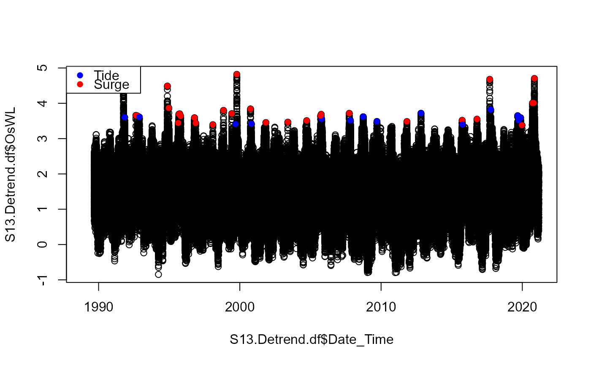

Surge_Criterion.RdClassify extreme water levels as either tidally dominated or surge driven.
Surge_Criterion(
Data,
Cluster_Max,
Criterion_Number = "NA",
Surge_Thres = 0.25,
Rainfall_Thres = NA,
Pre_Sur = 7,
MaxMin = "Max",
Rainfall_Interval = NA
)A data frame with co-occurring rainfall and O-sWL time series in two columns labeled "Rainfall" and "OsWL", respectively.
Numeric vector containing indexes of peaks in the O-sWL column of Data. If analyzing a sample conditioned on O-sWL derived using Con_Sample_2D() set equal to the $xcon output.
Numeric vector of length one, specifying which of the five criterion detailed in the report to adopt. If a user-defined criterion is adopted set to NA which is the default.
Numeric vector of length one, specifying the minimum elevation difference between a peak and prior maximum or minimum for the peak to be classified as surge driven. Default is 0.25.
Numeric vector of length one, specifying minimum rainfall within a +/- Rainfall_Interval period of a peak for the peak to be classified as surge driven. Default is NA.
Numeric vector of length one, specifying, minimum length of time allowed between preceding maximum or minimum and the peak. Default is 7.
Character vector of length one, specifying whether elevation difference refers to the preceding minimum ("Min") or maximum ("Max"). Default is "Max".
Numeric vector of length one, specifying length of time before and after a peak over which to sum rainfall totals. Total window width is 2*Rainfall_Interval+1. Default is NA.
A vector with each cluster maximum classified as either Tide or Surge driven.
#Decluster O-sWL series at S-13 using a runs method
S13.OsWL.Declust = Decluster(Data=S13.Detrend.df$OsWL,
SepCrit=24*7, u=0.99667)
#Classify peak water levels as either surge or tidally driven
surge_class = Surge_Criterion(Data = S13.Detrend.df,
Cluster_Max = S13.OsWL.Declust$EventsMax,
Criterion_Number = 5)
#Plot O-sWL time series with peaks the color of peaks representing classification
S13.Detrend.df$Date_Time = as.POSIXct(S13.Detrend.df$Date_Time)
plot(S13.Detrend.df$Date_Time,S13.Detrend.df$OsWL)
points(S13.Detrend.df$Date_Time[S13.OsWL.Declust$EventsMax],
S13.Detrend.df$OsWL[S13.OsWL.Declust$EventsMax],
col=ifelse(surge_class=="Tide","Blue","Red"),pch=16)
legend("topleft",c("Tide","Surge"),pch=16,col=c("Blue","Red"))

#Example of a custom surge criterion. Peak is classified as tidal if
#Elevation difference between peak and preceding minimum at least 7 hrs before is less than 0.25.
#Total rainfall from 72 hours before and to 72 hrs after the peak is less than 2 Inches
surge_class = Surge_Criterion(Data = S13.Detrend.df,
Cluster_Max = S13.OsWL.Declust$EventsMax,
Surge_Thres=2.5,Rainfall_Thres=2,Pre_Sur=7,
MaxMin="Min",Rainfall_Interval=72)